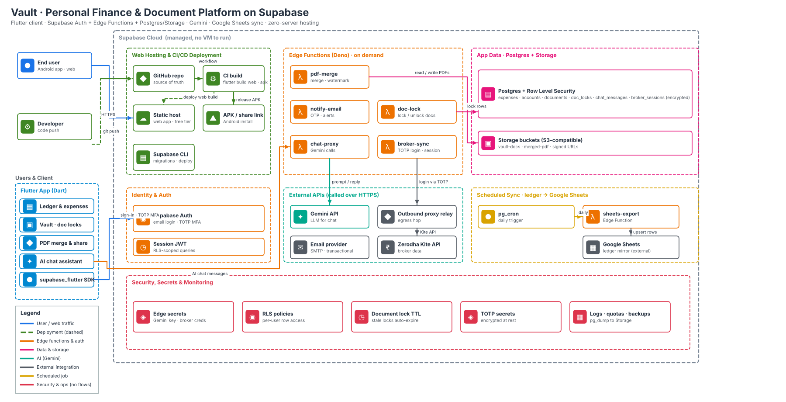

Ledger & expenses
Manage financial records and accounts in a structured data model, with user-specific access controls.
INDEPENDENT BUILD · TECHNICAL DEEP DIVE
How I brought together Flutter, Supabase, Gemini and serverless architecture to build a personal finance and document platform — with expense tracking, a document vault, PDF workflows, AI chat and external integrations.
I wanted one place to manage expenses, keep important documents and interact with my own financial information. The application brings those capabilities together rather than treating them as separate tools.
Manage financial records and accounts in a structured data model, with user-specific access controls.
Store important documents, manage document locks and keep files in object storage rather than database rows.
Process PDFs through backend functionality and provide controlled access to generated files.
Use a Gemini-powered chat assistant to make information easier to explore without relying only on manual navigation.
Use managed cloud services for the infrastructure, and focus my effort on application logic, integration boundaries and the user experience.
The system combines a Flutter client, Supabase backend services, serverless functions, AI, scheduled jobs and external integrations. Each component has a defined responsibility.

A shared application codebase targets Android and web. It presents the ledger, document vault, PDF workflows and AI chat, and uses the Supabase Flutter SDK for authentication.
Supabase provides Auth, PostgreSQL, Storage and Edge Functions. This replaces the need to operate a separate always-on application server for the backend responsibilities described here.
The AI assistant communicates with Gemini through the chat-proxy Edge Function. The API key is kept as a server-side secret rather than embedded in the Flutter app.
A separate broker-sync function coordinates the broker integration. The architecture includes an outbound proxy relay for external API communication.
A scheduled database job triggers the sheets-export Edge Function, which upserts ledger rows into Google Sheets.
GitHub hosts the source and CI workflow. The workflow builds the Flutter app; the Supabase CLI supports database migrations and deployment-related tasks.
Supabase provides the core backend foundation. Authentication establishes identity, PostgreSQL stores structured application records, and Storage handles documents and generated PDFs.
Email-based login and TOTP multi-factor authentication establish the user identity. After sign-in, the application receives a session JWT that can be used to authorize access to user-specific data.
PostgreSQL stores information such as expenses, accounts, documents, document locks, chat messages and encrypted broker sessions. Row Level Security policies are used to restrict which records a user can access.
Documents and merged PDFs are stored as objects, separately from relational records. Signed URLs provide controlled access to files when required.
Dedicated functions handle PDF merging, email notifications, document locking, Gemini chat requests, broker synchronization and Google Sheets export.
Rather than routing every backend task through one large service, the architecture separates operations into functions with focused responsibilities.
Handles PDF processing and merging on the backend, keeping that work outside the Flutter client.
Handles email notifications and alerts, including transactional communication and OTP-related notifications.
Manages document locking and unlocking. The architecture also includes automatic expiry of stale document locks.
Receives chat requests from the application, communicates with the Gemini API and returns the response. The Gemini API key remains a server-side secret.
Handles the Zerodha Kite API integration. The architecture shows an outbound proxy relay for communication with the external broker API.
Receives scheduled triggers from PostgreSQL Cron and upserts ledger information into Google Sheets.
AI and external services extend what the application can do. The important design choice is that these integrations are coordinated through backend functions rather than exposing privileged credentials in the client.
The user sends a chat request from Flutter. The chat-proxy Edge Function communicates with Gemini and returns a response. Keeping this flow server-side protects the Gemini API key and provides a place to control what context is shared with the AI service.
The Zerodha Kite API integration is handled separately from the frontend. Broker credentials and session information are treated as sensitive data, with encrypted broker-session storage represented in the architecture.
A PostgreSQL cron job triggers the sheets-export Edge Function on a schedule. The function upserts ledger rows into Google Sheets, providing a scheduled way to mirror financial information outside the app.
The email integration supports transactional communication, OTP-related notifications and alerts. The dedicated function keeps provider communication separate from the frontend.
The application handles personal financial records, important documents and private integrations. Security is therefore part of the architecture: identity, database authorization, secret management, encrypted session storage and operational controls.
I can explain how the system is built without exposing the private data it handles.
Authentication & TOTP
Supabase Auth provides email-based login and TOTP multi-factor authentication.
Row Level Security
RLS policies enforce per-user access to database records. Authentication identifies the user; RLS controls which rows that user can access.
Server-side secrets
Gemini and broker credentials are kept as backend secrets rather than embedded in the Flutter application.
Encrypted broker sessions
Sensitive broker-session information is stored encrypted and kept separate from frontend access.
Document access & lock expiry
Signed URLs provide controlled file access, while stale document locks are designed to expire automatically.
Operational safeguards
Logs, quotas and database backups form part of the operational security and reliability approach.
Why there is no live demo or application screenshots
The app contains personal financial records, sensitive documents and private integrations. I am sharing the architecture and engineering decisions instead of publishing a live demo or screenshots, because protecting that information is more important than showcasing the interface.
The choice was not about removing infrastructure entirely. It was about relying on managed services and event-driven execution instead of operating a traditional application server myself.
Authentication, PostgreSQL and file storage are provided as managed services. Edge Functions execute backend logic when invoked.
Backend operations are handled by Edge Functions, while scheduled jobs can trigger work such as exporting ledger data.
Database capacity, storage, function invocations, external API usage and platform limits still matter. Managed infrastructure reduces server operations; it does not remove engineering responsibility.
The architecture includes a source-control and CI workflow so application delivery and backend changes do not depend entirely on manual steps.
Application code and workflow definitions are maintained in GitHub, providing version history and a consistent place for changes.
When code is pushed, the CI workflow builds the Flutter application. This makes the build process repeatable rather than relying on a local manual build every time.
The web build can be deployed to static hosting, while the Android APK can be released through an install/share link.
The Supabase CLI supports database migrations and deployment-related tasks, keeping backend changes connected to the development workflow.
The most valuable part of this project was understanding how different responsibilities fit together without making the application unnecessarily complicated.
Flutter handles the interface; backend functions handle privileged operations and integrations.
PostgreSQL manages structured records while object storage holds documents and merged PDFs.
Credentials and session information need deliberate storage and controlled access.
Focused functions make individual workflows easier to change without redesigning the whole backend.
Authentication, RLS and signed URLs solve different parts of the access-control problem.
AI can help write and explain code, but architectural choices, data flows and validation still need engineering judgment.
THE BIGGER TAKEAWAY
Flutter handles the interface. Supabase provides the backend foundation. PostgreSQL manages structured records. Storage handles documents. Edge Functions connect external services. Gemini powers the AI interaction. GitHub supports delivery. Each component has a job — and that separation is what makes the architecture manageable.